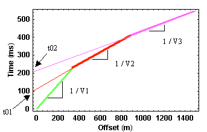
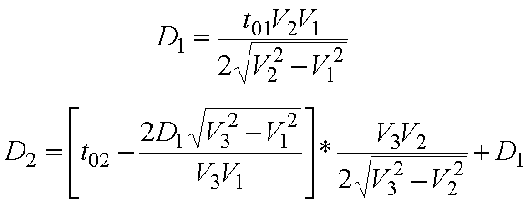

Travel Time Curves From Multiple Subsurface Layers
The travel time curve for the first arrivals that we would observe from the model given on the previous page is shown below. The green line segment represents travel times associated with the direct arrival, the red line are times associated with the head wave off of the top interface, and the purple line represents times for the head wave off of the bottom interface. Notice that in this example, although our bottom interface is only 175 meters deep, we do not see arrivals from this interface as first arrivals until we reach offsets in excess of 900 meters!! A general rule of thumb is that you need offsets of 3 to 5 times the depth down to which you would like to see.

As you would expect, we can determine the speeds of seismic wave propagation in the two layers and the halfspace from the slopes of the travel time curves. This is the identical procedure that we used in interpreting the more simple curves that arose from the simple layer over a halfspace model. The depths to each interface, again like the simple model we have described previously, can be computed from the intercept times, t01 and t02, and the velocities. Although we will not derive them, the equations for computing the depths are given below. D1 is the depth to the first interface and D2 is the depth to the second interface.

Additional layers simply add additional linear segments to the observed travel time curve. From these segments and their respective zero offset times, we can compute the velocities within each layer and the depths to each interface...usually!!
Seismology
- Simple Earth Model: Low-Velocity Layer Over a Halfspacepg 11
- Head Wavespg 12
- Records of Ground Motionpg 13
- Travel-time Curves for a Simple Earth Modelpg 14
- First Arrivalspg 15
- Determining Earth Structure from Travel Timespg 16
- Derivation of Travel Time Equationspg 17
- High-Velocity Layer Over a Halfspace: Reprisepg 18
- Picking Times of Arrivalspg 25
- Wave Propagation with Multiple Horizontal Layerspg 26
- Travel Time Curves from Multiple Horizontalpg 27
- Hidden Layerspg 28
- Head Waves from a Dipping Layer: Shooting Down Dippg 29
- Head Waves from a Dipping Layer: Shooting Up Dippg 30
- A Field Procedure for Recognizing Dipping Bedspg 31
- Estimating Dips and Depths from Travelpg 32